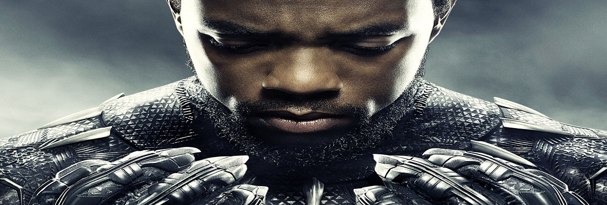

BIOGRAPHY
Chadwick Aaron Boseman (November 29, 1976 – August 28, 2020) was an American actor. After studying directing at Howard University, he landed his first major role as a series regular on Persons Unknown (2010). Boseman's breakthrough performance came as baseball player Jackie Robinson in the biographical film 42 (2013). He continued to portray
historical figures, starring in Get on Up (2014) as singer James Brown and Marshall (2017) as Supreme Court JusticeThurgood Marshall.
Boseman achieved international fame for playing superhero Black Panther in the Marvel Cinematic Universe (MCU) from 2016
to 2019. He appeared in four MCU films, including an eponymous 2018 film that earned him an NAACP Image Award for
Outstanding Actor in a Motion Picture and a Screen Actors Guild Award for Outstanding Performance by a Cast in a Motion
Picture. As the first black actor to headline an MCU film, Boseman was also named to the 2018 Time 100. Hisl final film,
Ma Rainey's Black Bottom, is scheduled to be released posthumously.[7]
In 2016, Boseman was diagnosed with colon cancer. Boseman kept his condition private, continuing to act while receiving
treatment. He died in 2020 from complications related to the illnes
Back to the top